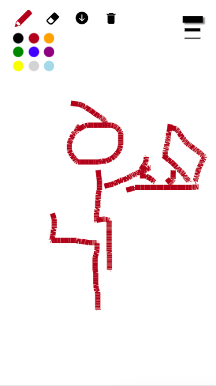
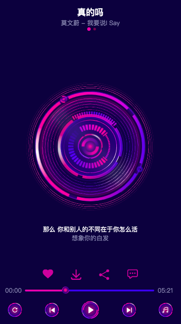
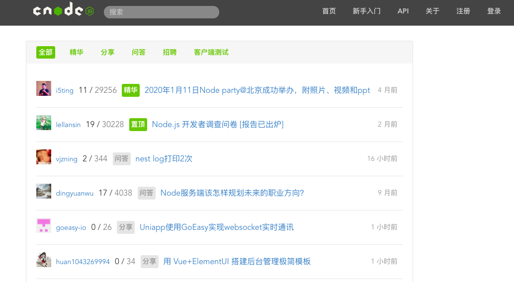
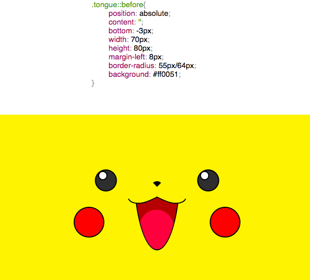
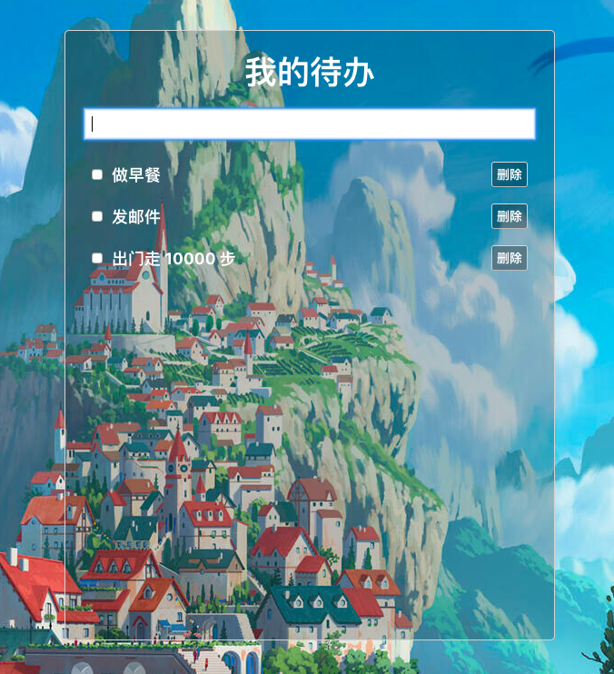

用原生 JS 做的画板工具，实现笔刷、擦除、清除、下载等功能。点击预览：Canvas 画板。

使用 Sass、原生 JS，结合一个简单的手势库，完成移动端的音乐播放项目。 包括上一曲、下一曲、暂停、播放功能。点击预览：音乐播放器。

通过 Vue 仿写的 CNODE 社区项目。使用 vue-router 做路由实现用户页面、帖子列表页、用户简介页、精华页面的跳转； 用 Axios 通信、Markdown-css 渲染 markdown 格式的帖子内容。点击预览：仿写 CNODE 社区。

CSS 写成的动画皮卡丘。预览：CSS 动画皮卡丘。

通过 React 写出的简易代办事项。用 localStore 存用户的待办信息，完成添加事项、删除事项功能。 点击预览：React-todo 项目。